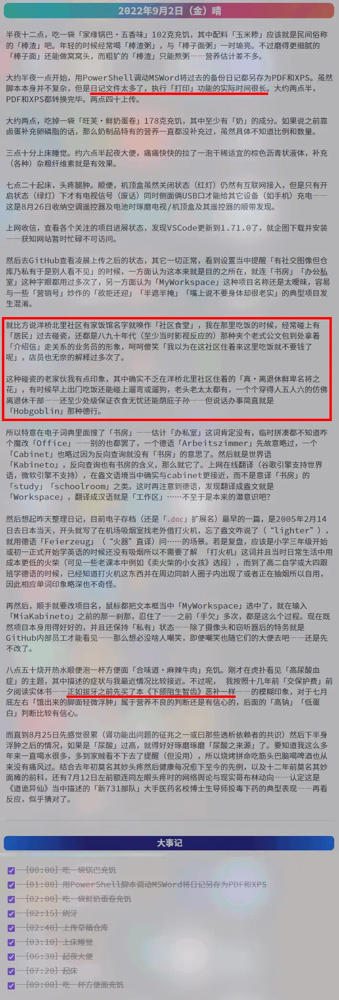

fanhan-inside
前情提要：
最新动向：

长话短说，这招我见过，想必部分记忆不止七秒钟的人民群众也见过，每当头顶生疮脚底流脓坏透了的幕后黑手搞阴谋诡计纸里包不住火曝光在即的时候，市面上就会涌现出大批钦定文豪来——丫写的小作文贴得全网都是，你的质疑露面就删——完全模仿受害者的身份处境，就是塞了许多心理龌龊的私货，再来几个捧哏的放风带节奏，把这事歪曲到受害者自作自受自讨苦吃的结论当中——在网上一定这个结论，其它不与「繁荣的简体中文互联网中央总书记」鲁玮委员长和「扬我国威壮我军威你看了没有（但你没有身份证）今非昔比阅兵式总指挥」傅政华大元帅最高指示保持一致的结论都被以「政治敏感」理由「亦当删去」了。
所以，先把今天从午夜到刚才我自己写的「真・日记」贴上来，欢迎钦定文豪进行学术探讨——
我正在用于写日记的「Obsidian」环境：

日记正文及标注：

关于用脚本打印日记时「文件太多了」的证据：

关于《求全责备厚积薄发，不打无准备之仗，不做无把握之事》原则在本日记当中提到场合的具体应用《下颌阻生智齿》：


我真正拍的牙片，其中「8」就是智齿编号，图中是我嘴里右下和左上的位置，后者曾经在当时的「龙空军史（或「真军史」）群当中发给群友看过」：

病历就不扫了。
——正如十二年前一样，嘴上说欢迎学术讨论，实际上碰上「连“十九年七闰”都不知道」的学术质疑，就出动「“海里有人”“海边有人”“手眼通中央军委/政法委”」的人脉把账号以「政治敏感」理由「亦当删去」了：


 fanhan-inside
fanhan-inside
最新动向：
今天日记当中记录的饮食及营养摄入：
为什么非得是今天？因为也是个值得纪念的日子：二十五年前的这一天去大学报道。
这是刚上大学的时候使用的日记本之封面、扉页、真・扉页、第一页。这个日记本是当时「（户口本）父母」给我的，具体谁给的忘了，应该是带景点简介的「纪念品」，隔三岔五就能插播跨页文案。
为什么给我，还强调是日记本，现在已经记不清楚了。不过可以肯定的是——之前中学时代用劣质仿牛皮色土黄封面「工作日记」本照样写日记，找几张白纸也能写日记，夹杂在课堂笔记课后作业册子当中也能有几页写的是日记，于是后来通常都找不到了——不是勒令我从大学开始「养成」写日记的习惯，而是「把日记集中写到一起」的意思。
有个旁证，就是 2010 年 7 月 24 日家贼上门看我傻笑之后过了几天，又来一趟，这次带着大学几年的日记本，一些残留的小说手稿（详见《囧斋随笔・短篇集》目录），就是大学时期的通信：
没错，家贼拿来的时候就是这个样子的，一摞空信封，一摞信纸，分开的。而我当年收到信件和保存的时候，可都是以「封」为单位，信纸都好好的装在信封里面呐。
把「天津墨水厂」的信封摆在最上面，扫描的时候盖住其它联系人的痕迹。这封信是我在使用鸵鸟绿色墨水发现堵了钢笔之后给天津墨水厂去信的情况下收到的，又过一段时间，上自习回来之后宿舍同学说有人找我，一问就是天津墨水厂的业务员，来北京公干时顺路拜访，没碰上而已。
因为当时鸵鸟的绿色墨水——我从高中开始用，但不能用于高考（明确规定只能用黑色或蓝色的钢笔或圆珠笔）——是颜料墨水，一旦干燥就会堵塞笔头，本来是蘸水笔专用的绘图墨水，我给灌进普通钢笔了。
结论很简单，一看就是有关部门临时工拆封后扫描过的，并且还没给收回信封，完全不在乎「暴露特务活动痕迹」——武德充沛侠义无双一力降十会——就算太过嚣张跋扈肆无忌惮让我知道了心存警惕了……又能咋嘀？
注意这些是别人给我的回信，我写的信分散在各位收件人手里，有关部门临时工是不是一个一个的「约谈」把我的「手稿」都收集起来，然后再找「影武者」「替身演员」「双胞胎兄弟 」暗中模仿吖？
所以最晚最晚从 2010 年莫名其妙面瘫、从原公司离职、看见家贼破门而入傻笑、判断已经被官方或民间的有关部门盯上……而家贼站在监视我的那个组织一边，而不是我这边 ——开始，「留个心眼」到现在。
这是很正常的反应，换谁来得知自己已经进入不知啥幕后黑手的瞄准镜视野之内，并且权威机构认证的血缘关系还靠不住，都应该是这种谨慎的生活态度。
反而大大咧咧无所谓的才是纯・傻哔，市面上各种倒打一耙贼喊捉贼狂喷「不负责任毫无担当の渣男」之类舆论，都是造谣污蔑栽赃陷害，炮制舆论者各个揣着明白装糊涂，疑似「繁荣的简体中文互联网中央鲁玮总书记和扬我国威壮我军威你看了没有（但你没有身份证）今非昔比阅兵式总指挥傅政华大元帅」的心腹包衣。
总之，孤苦伶仃可怜废柴草根文盲矬胖老穷光棍汉精神病仆街写手不入流码农数学渣宅男黑客活雷锋烟枪酒鬼饭桶缩卵怂货窝囊废多年来表现的「对文具尤其是钢笔很感兴趣」「对书法美术眼高手低」「更喜欢篆、隶、魏碑之类字体超过行楷，乃至爱屋及乌导致西洋书法也更喜欢各种“古风”字体」「好记性不如烂笔头」「码字是个好习惯」……都有更早之前更多年的一贯表现打底，不是中戏北影随便找个特型演员躲在摄像头窃听器后面模仿就能演得像的。
最后甩个包袱，顺便展开「下一步」或曰「NeXTSTEP」码字方向：日记环境截图当中带着输入法窗口，读者们能猜出之前我这里「输入法流氓争霸」的幸存者是谁了么？为什么要用这个皮肤，为什么要用使用这种皮肤的输入法？
提示：国产流氓输入法都提供了用户自制皮肤的工具，但是其中只有一家的皮肤文件是标准 zip 压缩包可以直接打开，民间美术兲才们不使用「官方」提供的工具而是拎起自己趁手的家伙事儿耍弄多年来得意伎俩——没准反而效率更高。